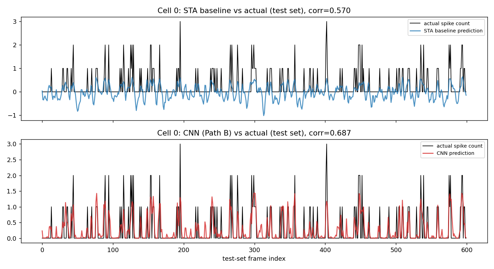
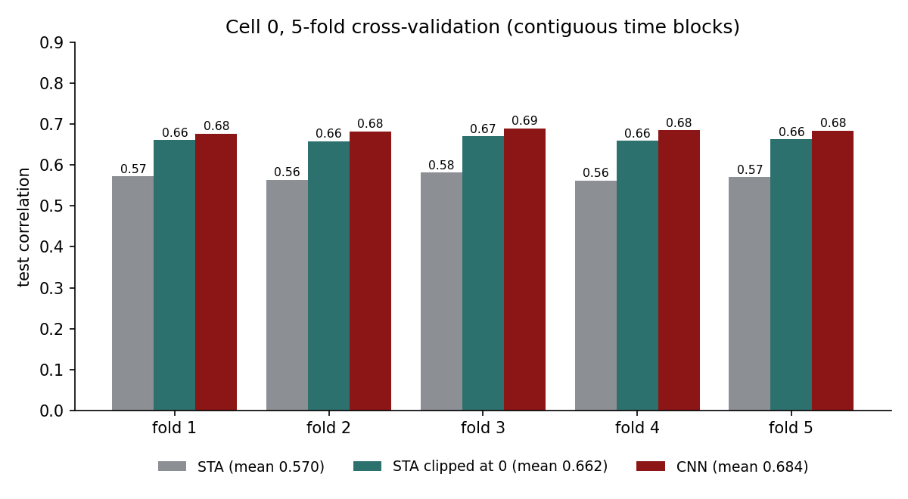
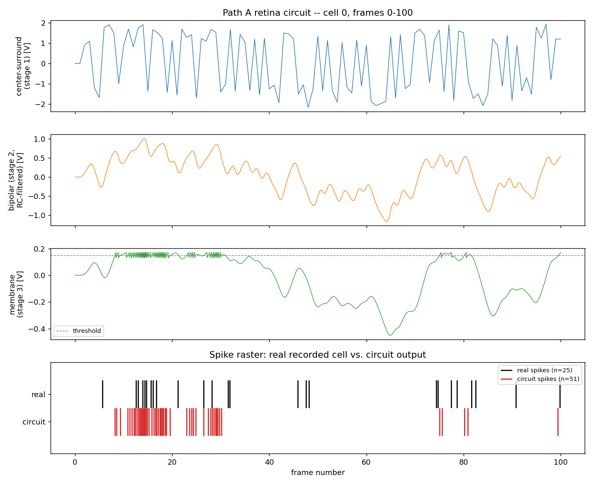
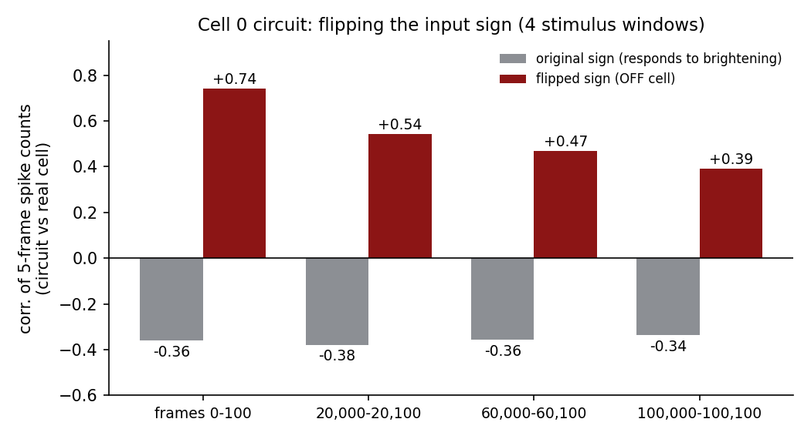
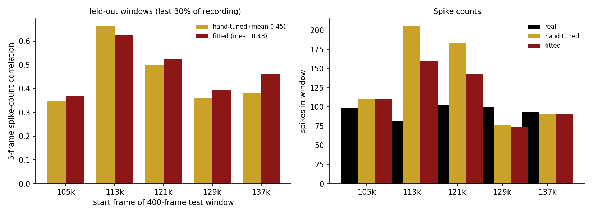
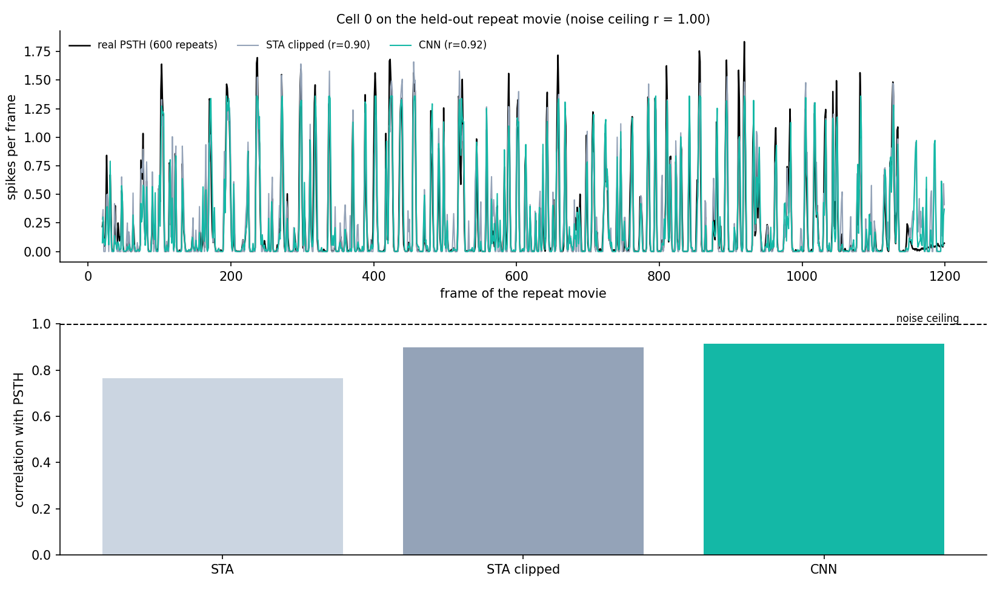
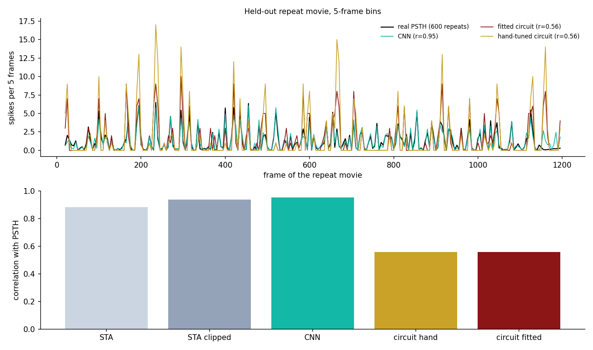

Both paths predict cell 0's spikes from the same real stimulus data and are
compared against the same held-out recorded spikes -- not just one path, per the roadmap.
PATH B -- CNN vs. STA BASELINE

A small CNN (2 conv layers over the 10×10 stimulus history) trained with a
Poisson loss, compared against the Phase 1 STA on an identical held-out temporal test split (model
selection done on a separate validation block, never the test set). Test-set correlation: STA
0.570, CNN 0.687 on a single split. The next panel shows how much of that gap is just clipping
negative predictions.
5-FOLD CROSS-VALIDATION: DOES CLIPPING EXPLAIN THE CNN'S WIN?

An STA prediction is a weighted sum of the stimulus, so it can go negative, but spike counts cannot.
Clipping the STA's prediction at zero (a point raised by Prof. Wandell) raises its correlation from 0.570 to
0.662 and its fit quality (R²) from 0.10 to 0.44, closing about 80% of the gap to the CNN
(0.684 ± 0.005, still ahead by about 0.02 in every fold). Most of what the CNN learned over the STA is to avoid
negative predictions. Still a single cell.
PATH A -- NGSPICE RETINA CIRCUIT

A real 3-stage ngspice circuit -- resistive-grid spatial (center-surround)
filtering, an RC temporal low-pass, and an integrate-and-fire spike generator -- driven by real
stimulus data. Cell 0 is an OFF cell, so the drive into the circuit is inverted: the circuit then produces 51 spikes
vs. 25 real spikes in frames 0 to 100, and its 5-frame spike counts correlate +0.74 with the real cell's
(hand-tuned, not fit; it still fires too many spikes in bursts). Getting this to converge and behave sensibly required finding and fixing
six distinct numerical/modeling bugs (steep-comparator timestep collapse, a switch miscalibrated
against the wrong voltage scale, a too-fast membrane recovery, and a gain that amplified sampling
noise into a DC bias) -- see the project README for the full list.
PATH A: FLIPPING THE SIGN FOR AN OFF CELL, FOUR STIMULUS WINDOWS

With the original sign (the circuit responds to brightening) the circuit's spike counts correlate
-0.36 with the real cell on average; with the sign flipped they correlate +0.54 (+0.39 to +0.74 across
four separate 100-frame windows). The sign came from the Phase 1 STA, not from fitting this score. The circuit still fires
1.5 to 2.7 times too many spikes; a refractory period, adaptation, and fitting its parameters to the cell are next.
PATH A: REFRACTORY PERIOD, ADAPTATION AND A PARAMETER FIT

Following the third meeting we added a refractory period and spike-frequency adaptation to the circuit
(each spike charges a fast and a slow RC node that raise the comparator's threshold) and fit eight parameters (gain,
threshold, time constants, refractory and adaptation strength) to the real spikes with a search that runs the actual
ngspice circuit. Fit on six 200-frame windows from the first 70% of the recording, then tested on five 400-frame windows
from the last 30%: mean correlation 0.48 fitted vs 0.45 hand-tuned, and 578 spikes vs 666 hand-tuned
(477 real). A modest gain. The fit chose no refractory period and a strong, slow adaptation (time constant about
0.26 s) instead, so adaptation did more for the extra spikes than the refractory period. This is one cell and a rough
search, so treat it as a first fit, not a final one.
PHASE 3: HELD-OUT REPEAT MOVIE AND THE REAL PSTH

A separate 10-second movie shown 600 times was held out of all training. Averaging the 600 spike trains
gives the cell's true firing rate (PSTH). Correlation of each model's prediction with that PSTH: STA
0.77, STA clipped at zero 0.90, CNN 0.92 (R² 0.65, 0.80, 0.84). The
repeats are so consistent that the noise ceiling is about 1.0. The same ordering as in cross-validation, and clipping again
closes most of the gap to the CNN.

The ngspice circuit run on the full 1200-frame repeat movie (6 times longer than the first runs), compared in
5-frame bins: 0.56 for both the hand-tuned and the fitted circuit, against 0.94 for the clipped STA and 0.95
for the CNN. It follows the cell's timing but fires about 20 to 40% too many spikes, and the fit did not help on this movie.
The circuit is the interpretable model; it is not yet the accurate one.